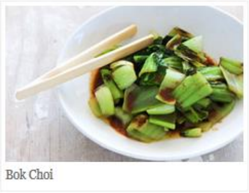
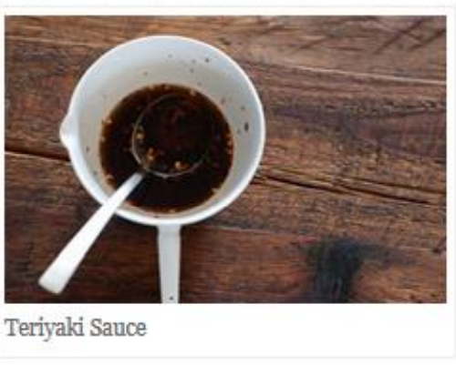

Japanese Vegetaerian
Five week course in London
A five week introdion to traditional
Japanese vegetarian meals, teaching you a
selection of rice and noodle dishes.
Sauces Masterclass
One day workshop
An intensive one-day course looking at how
to create the most delicious sauces for use in
a range of Japanese cookery.
Popular Recipes
Yakitori(grilled chicken)
Tsukune(minced chicken
patties)
Okonomiyaki(savory
pancakes)
Mizutaki(chicken
stew)
Contact
Yoko's Kitchen
27 Redchurch Street
Shoreditch
London E27DPP